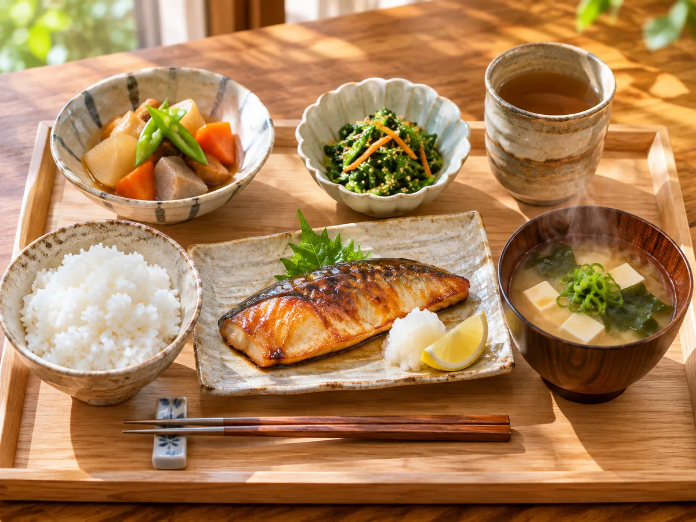

「家にこもりがちだった母が、朝からお化粧して待つように」
最初は『デイサービスは行きたくない』と言っていた母が、無料体験の温かい和食とお風呂をとても気に入り、今では週2回の通所を何より楽しみにしています。連絡帳の丁寧な記録も家族の安心です。
80代女性のご長女様（週2回ご利用・要介護2）
048-555-0183
受付 8:30〜17:30（月〜土）

定員15名の少人数だからこそ、お一人おひとりのペースを大切に。理学療法士の個別機能訓練と温かい手作り昼食で、ご本人もご家族も安心できる毎日を支えます。
無料見学・資料請求を申し込むご到着時の血圧・体温測定から服薬確認、急な体調変化まで看護師が丁寧に見守ります。インスリンや在宅酸素など医療処置が必要な方もご相談ください。
「自分の足で歩き続けたい」「階段を安心して昇りたい」など、お一人ごとの目標に合わせて無理のない運動メニューをマンツーマンで組みます。
人目を気にせずリラックスできる手すり付き個浴（リフト浴対応）をご用意。車いす対応車両でご自宅の玄関先までスタッフが安全に送迎します。

旬の食材を毎日厨房で調理。減塩食・きざみ食・やわらか食・アレルギー対応も管理栄養士と相談しながらお一人ずつ調整します。
| 要介護度 | 基本利用料（1日・1割負担） | 昼食・おやつ代（実費） | 1日あたりの合計目安 |
|---|---|---|---|
| 要介護 1 | 753円 | 750円 | 約 1,503円 |
| 要介護 2 | 890円 | 750円 | 約 1,640円 |
| 要介護 3 | 1,032円 | 750円 | 約 1,782円 |
| 要介護 4 | 1,172円 | 750円 | 約 1,922円 |
| 要介護 5 | 1,312円 | 750円 | 約 2,062円 |
※入浴介助加算（約40円/回）・個別機能訓練加算（約56円/回）等が別途加わります。要支援1・2の方も月定額制でご利用いただけます。お見積りは無料でお作りします。
最初は『デイサービスは行きたくない』と言っていた母が、無料体験の温かい和食とお風呂をとても気に入り、今では週2回の通所を何より楽しみにしています。連絡帳の丁寧な記録も家族の安心です。
80代女性のご長女様（週2回ご利用・要介護2）
玄関まで笑顔で迎えに来てくださり、帰宅時もその日の食事量やリハビリの様子を丁寧に伝えてくださいます。入浴介助の負担が減り、家族みんなが穏やかに過ごせています。
70代男性のご家族様（週3回ご利用・要介護3）
まずはお気軽にご連絡ください。介護認定がこれからの方も申請手順をご案内します。
送迎付き・手作り昼食付きの無料体験で、施設の雰囲気をご本人様とご確認ください。
担当ケアマネジャー様と利用曜日や目標を共有し、無理のない通所計画を整えます。
ご自宅玄関までのお迎えでスタート。体調やご様子は毎回連絡帳でお伝えします。
はい、もちろんです。市役所や地域包括支援センターでの申請方法から、ご本人様に合ったサービス選びまで生活相談員が分かりやすくご案内します。
定員15名の少人数制ですので、落ち着いた環境の中でスタッフが寄り添って対応いたします。ご不安な点は事前にゆっくりお聞かせください。
さいたま市浦和区・南区・中央区・緑区（施設から車で約15分圏内）を中心にご自宅の玄関先まで送迎しております。エリア外の方もご相談ください。
バスタオル・入浴用品は施設でご用意しています。普段お飲みのお薬・室内履き・着替え1組だけお持ちください。
介護認定の申請がこれからの方や、ケアマネジャー様からの空き状況のお問い合わせも随時承っております。お気軽にお電話またはフォームよりご連絡ください。
無料見学・体験利用を申し込む